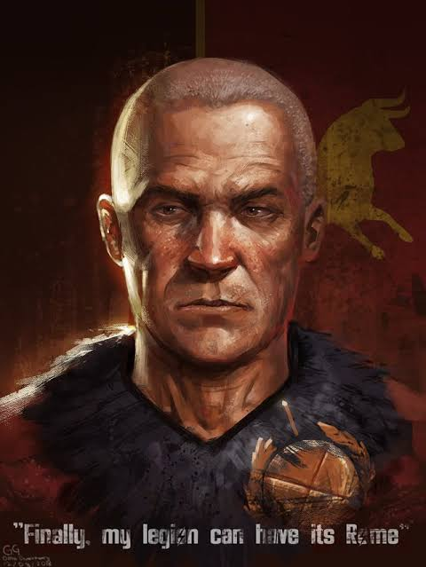

Personajes
Tres figuras que, de un modo u otro, deciden el destino de la presa Hoover y de todo el Mojave.
Fundador de New Vegas
Mr. House
Magnate pre-guerra que predijo la catástrofe nuclear y construyó las defensas que salvaron la ciudad. Gobierna en secreto desde lo alto del Lucky 38, manteniendo a New Vegas como su proyecto personal.

Protagonista
El Correo
Sobrevive a un disparo en la cabeza y a ser enterrado vivo en el desierto. A partir de ahí, sus decisiones —no su pasado— son lo que define quién es realmente.

Líder de la Legión
Caesar
Antiguo profesor convertido en caudillo, fundó la Legión inspirándose en la Roma antigua. Impone orden a través del miedo y la conquista, y ve en la NCR un enemigo a aplastar.